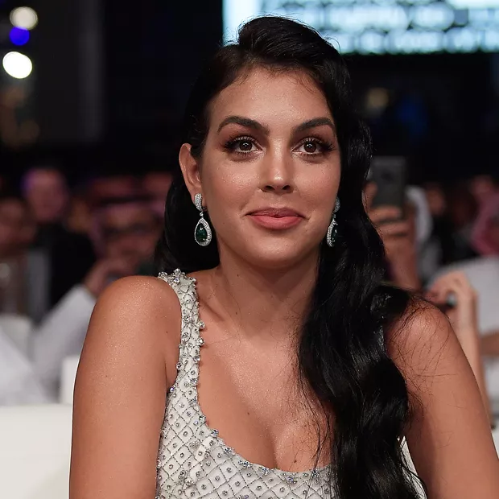

More Images
Sport Bible
Cristiano Ronaldo's reaction to journalists doing the 'Siu' at Al Nassr unveiling has...
1 day agoDAILY POST
Ronaldo could defy FIFA ban to make Al-Nassr debut, face further punishment....
3 hours agoDAILY POST
Real reason Ronaldo left Al-Nassr’s game at half time revealed
3 hours agoGOAL
Al-Nassr postpone first game since Ronaldo transfer, due to last minute electrical fault...
24 hours ago
Sahara Reporters
Amnesty International Urges Portugese Footballer Star, Ronaldo to speak against...
2 days agoMARCA
Cristiano Ronaldo and Georgina Rodriguez: The law the couple will break in Sau...
2 hours agoMARCA
Roberto Martinez discusses Cristiano Ronaldo's role in Portugal team...
2 hours agohttps://en.wikipedia.org › wiki › Cristiano_Ronaldo
Cristiano Ronaldo - Wikipedia
Cristiano Ronaldo dos Santos Aveiro GOIH ComM is a Portuguese professional footballer who plays as a forward for Saudi Professional League club Al Nassr and ...
Early life · Club careerPeople also ask
Who is No 1 Messi or Ronaldo?
At the club level, Messi holds the record for most goals in La Liga with 474. In total, including clubs and country, Messi has scored 793 goals in 1,003 appearances. He also has 350 assists to his name. On the other hand, Ronaldo has scored 819 goals in 1,145 appearances for both club and country.
21 Dec 2022Why is Ronaldo so healthy?
The five-time Ballon d'Or winner is a big believer that resting and sleeping is a big part of living a healthy lifestyle, and will sleep for a minimum of eight hours every night, while he also takes five small naps each day on top of that to allow his body to recover as best as possible, as recommended by his sleep ...
29 Mar 2022How many assists does Ronaldo have?
Ronaldo has provided 266 assists in his career.Most assists in football.
| Player | Team (current) | Assists |
|---|---|---|
| Lionel Messi | Paris Saint-Germain | 386 |
| Thomas Muller | Bayern Munich | 294 |
| Luis Suarez | Atletico Madrid | 282 |
| Angel di Maria | Juventus | 274 |
1 more row
How many cars does Ronaldo have?
Right from Bugatti to McLaren the Portugal star owns one of the most expensive cars in the world. Ronaldo is a proud owner of more than 20 luxurious cars.
21 Jun 2022Who is the GOAT in football?
Lionel Messi of Argentina is undoubtedly the GOAT of football in the 21st century. The acronym GOAT stands for Greatest of All Time and Messi is unquestionably the greatest of all time when it comes to football in the modern era.
Feedback
Videos
https://www.cristianoronaldo.com
Cristiano Ronaldo | OfficialCristiano Ronaldo's highlights and achievements. View Highlights. Your browser does not support the video tag. CR7 Eyewear. A contemporary collection able ...
https://www.instagram.com › cristiano
Cristiano Ronaldo (@cristiano) • Instagram photos and videos529m Followers, 528 Following, 3418 Posts - See Instagram photos and videos from Cristiano Ronaldo (@cristiano)
https://ronaldo.com
ronaldo.com - Football News, Live Score, Results and much ...Get the your latest football news, transfer rumours, results, statistics and much more at ronaldo.com. Download our app today!
https://www.mirror.co.uk › Sport › Football
Cristiano Ronaldo - latest news, net worth and boots - The Mirror4 hours ago — One of the world's best football players, Cristiano Ronaldo set many records while playing for Manchester United, Real Madrid, Juventus and the Portuguese ...
Net worth: $500m Boots: Nike CR7https://www.dailymail.co.uk › sport › cristianoronaldo
Cristiano Ronaldo News, Stats and Updates | Daily Mail OnlineGet the latest on Al-Nassr forward Cristiano Ronaldo after the veteran joined the Saudi club in huge deal.
https://www.marca.com › ... › Soccer › Premier League
Latest Cristiano Ronaldo News Today - MARCAGet updates on the latest Cristiano Ronaldo News and enjoy our posts, videos and analysis on Marca English. All Cristiano Ronaldo news in the same place.
https://www.marca.com › Home › Soccer
Cristiano Ronaldo and Georgina Rodriguez: The law the ...7 hours ago — Cristiano Ronaldo has begun his adventure in Arabian football, where he has been given a spectacular welcome after signing for Al-Nassr.
1 2 3 4 5 6 7 8 9 10 Next
About
Cristiano Ronaldo dos Santos Aveiro GOIH ComM is a Portuguese professional footballer who plays as a forward for Saudi Professional League club Al Nassr and captains the Portugal national team. Wikipedia
Born: 5 February 1985 (age 37 years), Hospital Dr. Nélio Mendonça, Funchal, Portugal
Current teams: Portugal national football team (#7 / Forward),Al-Nassr FC(#7 / Forward)
Dates joined: 2022 (Al-Nassr FC, Al-Nassr FC), MORE
Height: 1.87 m
Salary: 62 million GBP (2023)
Profiles

Instagram

Twitter

Facebook

Youtube
Stats
Portugal
| League | Matches | Goals |
|---|---|---|
| World cup
2022 |
5 | 1 |
| World Cup Qualifiers
2021-22 |
9 | 6 |
| UEFA EURO
2021 |
4 | 5 |
| UEFA EURO Qualifiers
2019-20 |
8 | 11 |
| FIFA confederations cup 2017 |
6 | 2 |
People also search for

Lionel Messi
- 
Georgina-Rodri...

neymar
Luis-Suarez